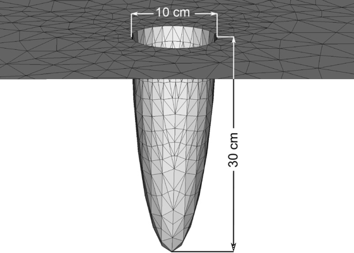
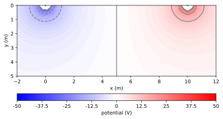
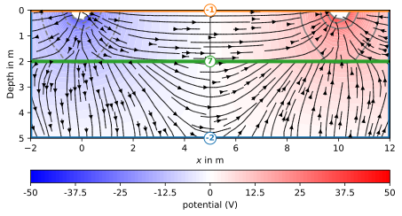
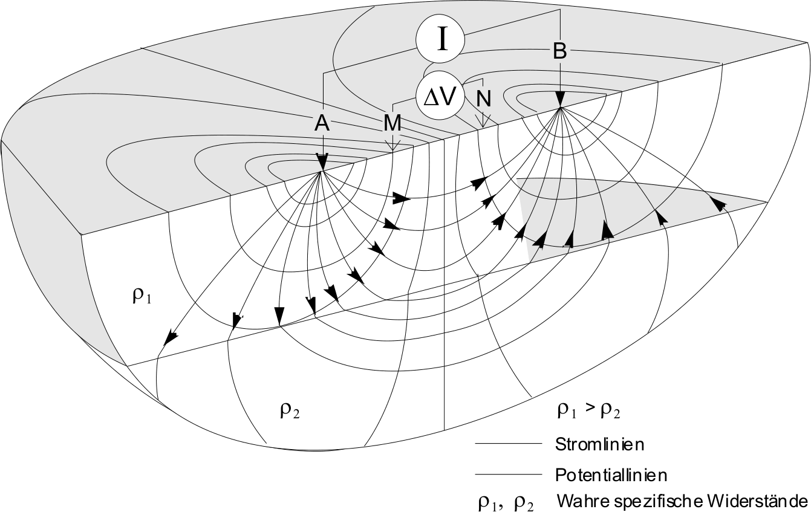

2 Grundgleichungen
3 Grundgleichungen

3.1 Kontinuitäts-Gleichung
Maxwell-Gleichungen stationär \[\curl \vb H = \vb j = \sigma \vb E + \vb j_s\]
\[\div \curl\vb H = \div\vb j=\div(\sigma\vb E) + \div\vb j_s=0\]
\[\Rightarrow -\div(\sigma\vb E)=-\div(\sigma\grad U)=\div\vb j_s\]
Diese partielle Differential-Gleichung (PDE) ist eine Poisson-Gleichung & beschreibt die Potentialverteilung für beliebige Leitfähigkeiten. Im Allgemeinen lösen wir sie numerisch, für einfache Fälle analytisch.
3.2 Das Konzept der Punktquelle
Elektroden sind “klein” (gegenüber Abstand zu Potentialmessung), der Strom wird an einem “Punkt” eingespeist (Integral \(I\)):
\[\div\vb j = I \delta(\vb r - \vb r_s)\]
- unendliche Stromdichte bei \(\vb r_s\)
In Wirklichkeit
- Elektroden sind ausgedehnt und haben endliche Fläche \(\Rightarrow\) endliche Stromdichte

3.3 Lösung für homogenen Vollraum
\[-\div(\sigma\grad U)=\div \vb j_s\]
Strom verteilt sich radial über Kugel-Oberfläche
\[j=I/A=I/(4\pi r^2)\]
\[U(r)=r E=r \rho j=\rho I / (4\pi r)\]
Berechnung des (scheinbaren) spezifischen Widerstands aus \(U\) und \(I\)
\[\Rightarrow \rho_a = \frac{U}{I} 4\pi r=R\cdot k \quad\mbox{mit}\quad k=4\pi r\]
3.4 Lösung für homogenen Halbraum
\[-\div(\sigma\grad U)=\div \vb j_s\]
Strom verteilt sich radial über Halbkugel-Oberfläche
\[j=I/A=I/(2\pi r^2)\]
\[U(r)=r E=r \rho j=\rho I / (2\pi r)\]
Berechnung des (scheinbaren) spezifischen Widerstands aus \(U\) und \(I\)
\[\Rightarrow \rho = \frac{U}{I} 2\pi r=R\cdot k \quad\mbox{mit}\quad k=2\pi r\]
3.5 Zwei Strom-Elektroden
werden angewandt, benötigen aber ein langes Kabel zur Elektrode B und sind daher meist unpraktisch.
Überlagerung der Potentiale \[u(\vb r) = \frac{I\rho}{2\pi} \Big(\frac{1}{|\vb r - \vb r_A|}-\frac{1}{|\vb r - \vb r_B|} \Big)\]

3.6 4-Punktmessung (Knödel, 2005)

3.7 Konfigurations/Geometrie-Faktor
\(U_{AM} = \rho I \frac{1}{2\pi \overline{AM}}\), \(U_{AN} = \rho I \frac{1}{2\pi \overline{AN}}\) etc.
\[ \Delta U = U_{AM} - U_{AN} - (U_{BM} - U_{BN}) \]
\[ \Delta U = \rho I \big( \frac{1}{2\pi \overline{AM}} - \frac{1}{2\pi \overline{AN}} - \frac{1}{2\pi \overline{BM}} + \frac{1}{2\pi \overline{BN}}\big)\]
\[ \Rightarrow \rho = \frac{\Delta U}{I} k \quad\mbox{mit}\quad k = \frac{2\pi}{\frac{1}{\overline{AM}}-\frac{1}{\overline{AN}}-\frac{1}{\overline{BM}}+\frac{1}{\overline{BN}}} \]
3.8 Stetigkeit an Grenzflächen

\[\Rightarrow \div(\sigma\vb E)=-\div(\sigma\grad U)=0\]
\(E_1=E_2\Rightarrow \rho_1 j_{x1}=\rho_2 j_{x2}\) \(j_{z1}=j_{z2}\)
4 ERT Feldausbreitung
Einstieg siehe Notebook
4.1 Homogener Untergrund: Potentialverteilung

4.2 Homogener Untergrund: Stromlinien

4.3 Schlechter Leiter: Stromlinien

4.4 Guter Leiter: Stromlinien

4.5 Inhomogener Untergrund

4.6 Inhomogener Untergrund: Stromlinien

4.7 Inhomogener Untergrund: Potentialverteilung

4.8 Homogener Untergrund: Potentialverteilung
4.9 Laplace-Gleichung
in einem kugelsymmetrischen Koordinatensystem
\[\laplacian u = \pdv[2]{u}{r} + \frac{2}{r}\pdv{u}{r}=0\]
Integration liefert \(\pdv{u}{r}=\frac{C_1}{r^2}\) und dann \(u=-\frac{C_1}{r} + C_2\)
Wegen \(u(r\rightarrow\infty)=0\) gilt \(C_2\)=0
\(I=4\pi r^2 j=-4\pi r^2 \sigma\pdv{u}{r}=-4\pi\sigma C_1 \quad\Rightarrow\quad u=\frac{I\rho}{4\pi r}\)
4.10 Lösung für homogenen Halbraum
\[-\div(\sigma\grad U)=\div \vb j_s\]
Strom verteilt sich radial über Halbkugel-Oberfläche
\[j=I/A=I/(2\pi r^2)\]
\[U(r)=r E=r \rho j=\rho I / (2\pi r)\]
Berechnung des (scheinbaren) spezifischen Widerstands aus \(U\) und \(I\)
\[\Rightarrow \rho = \frac{U}{I} 2\pi r=R\cdot k \quad\mbox{mit}\quad k=2\pi r\]
4.11 Zwei Strom-Elektroden
werden angewandt, benötigen aber ein langes Kabel zur Elektrode B und sind daher meist unpraktisch.
Überlagerung der Potentiale \[u(\vb r) = \frac{I\rho}{2\pi} \Big(\frac{1}{|\vb r - \vb r_A|}-\frac{1}{|\vb r - \vb r_B|} \Big)\]
4.12 Potentialverteilung
4.13 Stromlinien
4.14 4-Punktmessung (Knödel, 2005)

4.15 Konfigurations/Geometrie-Faktor
\(U_{AM} = \frac{\rho I}{2\pi} \frac{1}{\overline{AM}}\), \(U_{AN} = \frac{\rho I}{2\pi} \frac{1}{\overline{AN}}\), \(U_{BM} = \frac{\rho I}{2\pi} \frac{1}{\overline{BM}}\), \(U_{BN} = \frac{\rho I}{2\pi} \frac{1}{\overline{BN}}\)
\[ \Delta U = U_{AM} - U_{AN} - (U_{BM} - U_{BN}) \]
\[ \Delta U = \frac{\rho I}{2\pi} \big( \frac{1}{\overline{AM}} - \frac{1}{\overline{AN}} - \frac{1}{\overline{BM}} + \frac{1}{\overline{BN}}\big)\]
\[ \Rightarrow \rho = \frac{\Delta U}{I} k \quad\mbox{mit}\quad k = \frac{2\pi}{\frac{1}{\overline{AM}}-\frac{1}{\overline{AN}}-\frac{1}{\overline{BM}}+\frac{1}{\overline{BN}}} \]